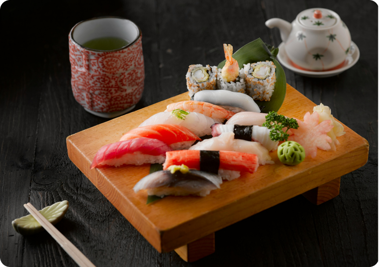
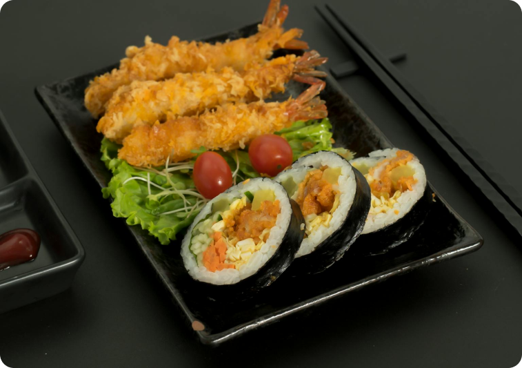
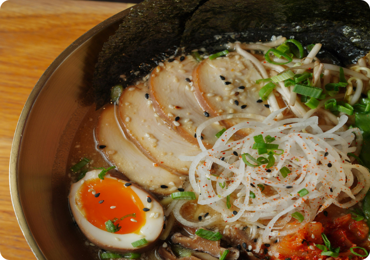

Sushi is a Japanese dish that has captured the hearts of food lovers around the world. Typically made with vinegared rice and a variety of ingredients, including fresh seafood, vegetables, and sometimes tropical fruits, sushi comes in several forms, such as nigiri, maki, and sashimi. Each piece is crafted with precision, highlighting the freshness of the ingredients. Whether enjoyed at a high-end sushi restaurant or a casual conveyor belt sushi bar, the experience of savoring sushi is a delightful journey into Japan's culinary artistry.
Tempura is a popular Japanese dish that features seafood and vegetables coated in a light, crispy batter and deep-fried to perfection. The technique originated in the 16th century, influenced by Portuguese cooking methods, and has since evolved into a beloved staple of Japanese cuisine. Tempura is typically served with a dipping sauce, grated daikon radish, and rice, offering a delightful contrast between the crunchy exterior and the tender filling. Its delicate flavors and airy texture make tempura a must-try for anyone exploring Japanese food.
Ramen is a comforting and versatile noodle soup that has become a global phenomenon, beloved for its rich flavors and diverse styles. Originating from China, ramen was adapted in Japan and now boasts countless regional variations, each with its unique broth, toppings, and noodles. From the savory pork-based tonkotsu ramen of Fukuoka to the miso ramen of Hokkaido, each bowl tells a story of local ingredients and traditions. With its heartwarming broth, chewy noodles, and an array of toppings like soft-boiled eggs and green onions, ramen is the perfect dish for a cozy meal or a late-night snack.
